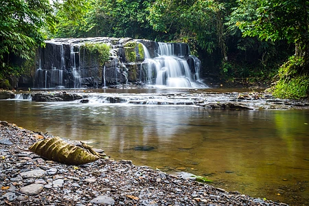
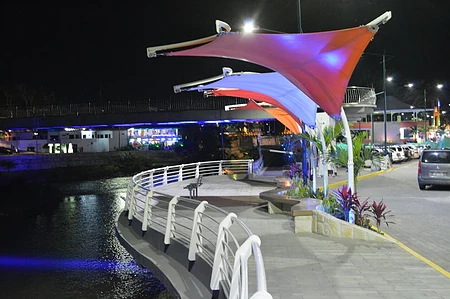
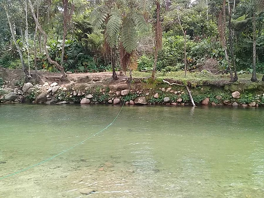
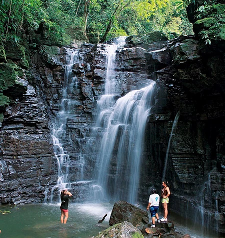
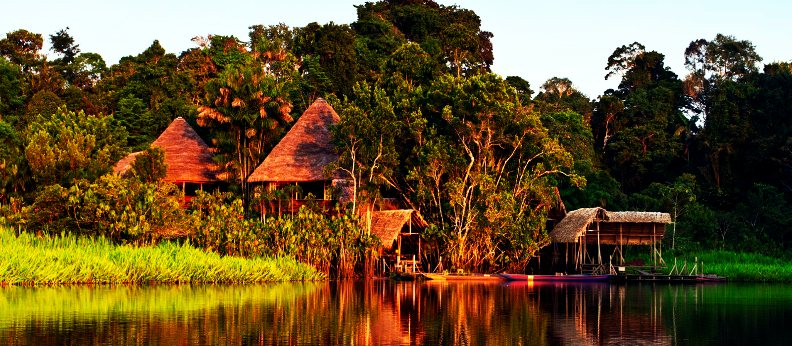
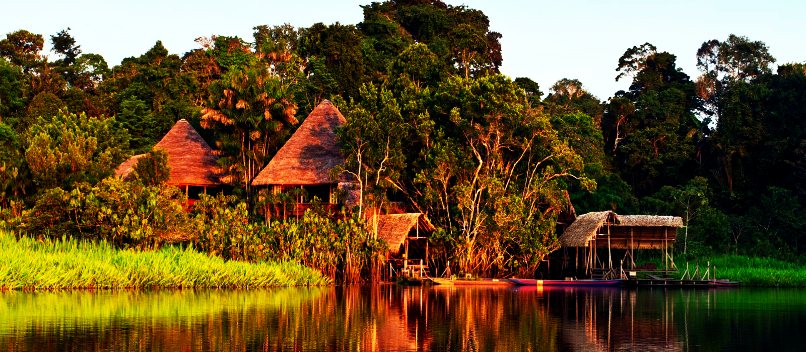

ORIENTE
---------------------------------------------------------------------------------------------------------------------------------------------------------------------------------------------------------
Las cascadas de Yanayaku
Las cascadas de Yanayaku: Se trata de una pequeña excursión por selva secundaria (30 minutos aproximadamente) hasta llegar a unas interesantes y diferentes cascadas, típicas de algunos pequeños afluentes de la selva. Es apto para toda la Familia.

Ciudad de Tena
Ciudad de Tena: La moderna capital de la provincia de Napo se llama Tena, tierra de la guayusa y la canela. Tiene un hermoso Malecón junto a los dos Ríos, ademas de contar con la infraestructura para que los Turistas puedan realizar cualquier actividad.

Batan Cocha Balneario Chuya Yaku
Batan Cocha Balneario Chuya Yaku: Aprovecha el clima que tiene Archidona
para visitar este refrescante y cristalino balneario. Tiene una soga para lanzarse como tarzán al río. El lugar lo puede visitar toda la familia. Aquí venden comida típica y hay un Bar para las bielas.

Las Cascadas "Latas"
Las Cascadas "Latas": Disfruta de un paseo por la selva y junto a un pequeño río con abundantes cascadas, las cascadas de "Latas". En cada una de las cascadas se forman pequeñas piscinas naturales de agua limpia y cristalina. Ideal para pasear y refrescarse en familia.

 
